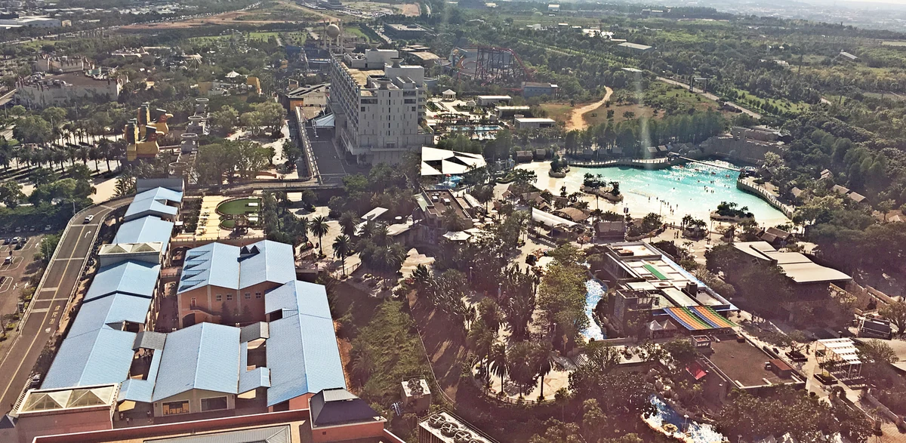

리바오랜드(麗寶樂園) 입장권과 근처 맛집, 놀고 나서 어디서 먹을까?
놀이공원·워터파크·대관람차를 즐긴 다음, 허우리·펑위안 쪽 맛집까지 한 번에 정해보세요.
게시
리바오랜드(麗寶樂園)는 타이중 북쪽 허우리(后里)에 있는 대형 리조트형 놀이공원이에요. 시내에서 떨어져 있어서, 놀고 나서 어디서 먹을지 미리 정해두면 편해요.
01 · 리바오랜드는 어떤 곳일까
육상 놀이공원 探索世界(디스커버리 월드)와 워터파크 馬拉灣(마라완)을 묶어 '물과 땅 두 개의 놀이공원'으로 소개하고, 대관람차 天空之夢도 함께 있어요. 주소는 타이중시 后里區 福容路 8호예요.

02 · 꼭 볼 것
搶救地心 '세계 유일의 끊어진 레일 롤러코스터'로 알려진 대표 스릴 놀이기구예요.
熊大的麗寶小鎮 아이와 함께 놀기 좋은 가족 구역이에요.
天空之夢 대관람차 리바오 리조트(麗寶樂園渡假區)의 대관람차예요.
마라완은 계절 운영 워터파크 마라완은 계절에 따라 열어요. 가기 전에 공식 사이트에서 운영일을 확인하세요.
03 · 가는 법
허우리(后里)역에서 허우리역에서 后里國小 앞까지 걸어가면 놀이공원 무료 셔틀버스를 탈 수 있어요. 155·811번 버스도 가요.
차로 國道1號 后里·外埔 IC에서 약 3분이에요.
04 · 놀고 나서 들르기 좋은 근처 맛집
놀이공원에서 가장 가까운 곳은 약 1.2km 떨어져 있고, 나머지는 5~8km 떨어진 허우리·펑위안(豐原) 쪽이라 차나 택시로 이동하는 편이 편해요. 아래 거리는 지도에 등록된 좌표로 잰 직선거리라 실제 이동 거리는 더 길 수 있어요.
Grace holiday · 대만식 · 북동쪽 약 1.2km 지도에 대만식(으)로 등록된 곳이에요.
橘祥合院 · 대만식 · 동쪽 약 5.6km 지도에 대만식(으)로 등록된 곳이에요.
MIMIAN瞇瞇眼_豐原店 · 베이커리 · 남동쪽 약 8.0km 지도에 베이커리(으)로 등록된 곳이에요.
Fengyuan Miaodong Night Market · 노점 · 남쪽 약 8.4km 지도에 노점(으)로 등록된 곳이에요.
가게마다 쉬는 날과 영업시간이 다르니 방문 전 구글맵에 등록된 영업시간을 확인하세요.
지도에서 타이중 맛집도 확인해보세요
놀이공원 일정 앞뒤로 들를 타이중 맛집을 지도에서 함께 찜해두세요.